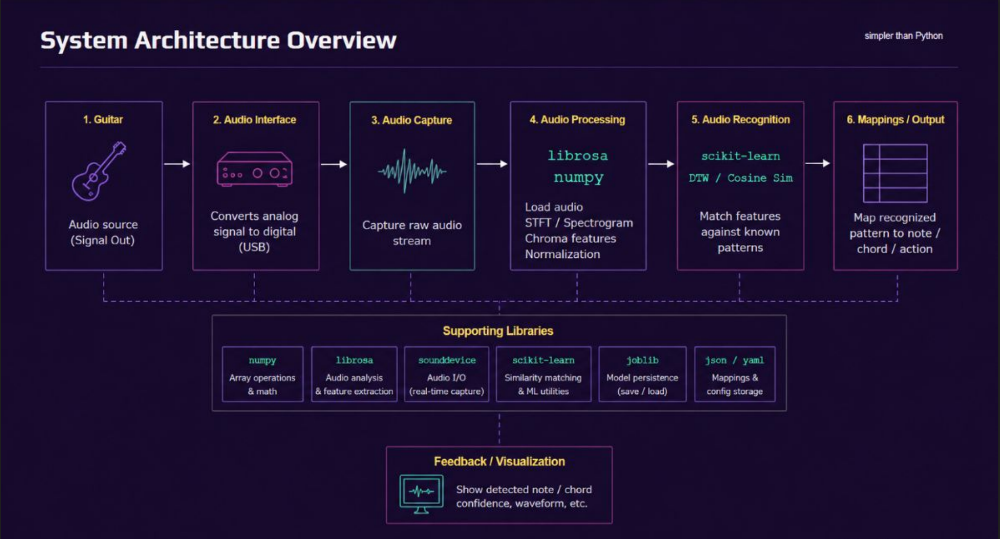
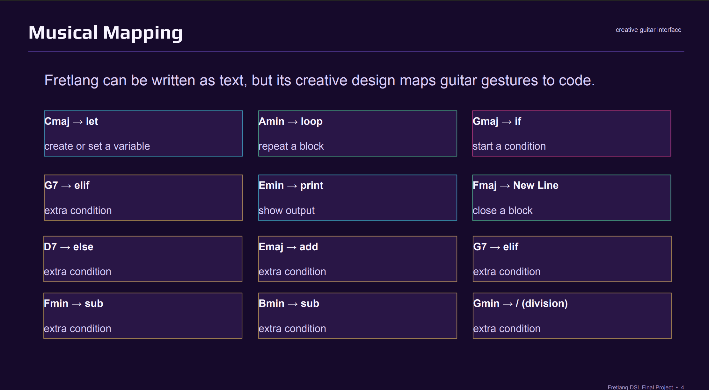
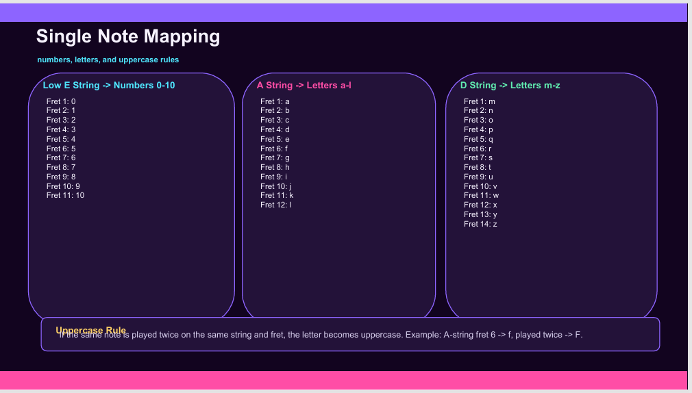
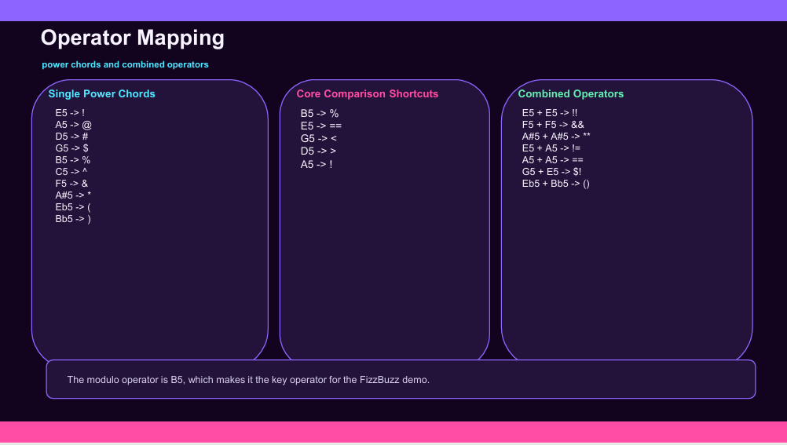

Simpler than Python
No colons, no parentheses, no semicolons, and very few keywords.
DSL Final Project • textX + Python
Fretlang is a guitar-inspired domain-specific language designed to make code feel
creative, physical, and easy to read. It uses a tiny set of commands like
let, print, loop, if, and end.
let i 1 loop 15 if i % 15 == 0 print FizzBuzz elif i % 3 == 0 print Fizz elif i % 5 == 0 print Buzz else print i end add i 1 end
Purpose & Philosophy
Fretlang was created as a final project to show that a language can be smaller and easier than Python while still supporting variables, loops, conditionals, arithmetic, and output. The syntax is intentionally tiny so it is easy to parse, easy to explain, and great for demos.
No colons, no parentheses, no semicolons, and very few keywords.
Built with textX grammar and a Python interpreter for clean DSL structure.
Inspired by guitar performance and designed to feel playful and memorable.
Visual Reference




Syntax
let name valueprint valueloop number … endif condition … endelif conditionelseadd name numbersub name numbermul name numberendGrammar
program ::= statement*
statement ::= let_stmt
| print_stmt
| loop_stmt
| if_stmt
| add_stmt
| sub_stmt
| mul_stmt
let_stmt ::= 'let' IDENTIFIER value
print_stmt ::= 'print' value
loop_stmt ::= 'loop' NUMBER statement* 'end'
if_stmt ::= 'if' condition statement*
( 'elif' condition statement* )*
( 'else' statement* )?
'end'
add_stmt ::= 'add' IDENTIFIER NUMBER
sub_stmt ::= 'sub' IDENTIFIER NUMBER
mul_stmt ::= 'mul' IDENTIFIER NUMBER
condition ::= value operator value
value ::= NUMBER | IDENTIFIER | WORD
operator ::= '==' | '!=' | '%' | '>' | '<'
Interpreter
from __future__ import annotations
from dataclasses import dataclass, field
from typing import Dict, List
from ast_nodes import (
BinaryOp,
DecrementStatement,
Identifier,
IfStatement,
IncrementStatement,
LetStatement,
LoopStatement,
NumberLiteral,
PrintStatement,
Program,
StringLiteral,
UnaryOp,
UpdateStatement,
)
class FretlangRuntimeError(RuntimeError):
"""Raised for runtime errors in Fretlang."""
@dataclass
class Environment:
store: Dict[str, object] = field(default_factory=dict)
def has(self, name: str) -> bool:
return name in self.store
def get(self, name: str) -> object:
if name not in self.store:
raise FretlangRuntimeError(
f'Variable "{name}" is not defined. '
'Did you forget to declare it with let first?'
)
return self.store[name]
def set(self, name: str, value: object) -> None:
self.store[name] = value
class FretlangInterpreter:
"""Interpreter for the Fretlang AST."""
def visit_LetStatement(self, node: LetStatement) -> None:
value = self.run(node.value)
self.env.set(node.name, value)
def visit_LoopStatement(self, node: LoopStatement) -> None:
count = self.run(node.count)
if not isinstance(count, int):
raise FretlangRuntimeError(f'Loop count must be an integer, got {count!r}.')
if count < 0:
raise FretlangRuntimeError(f'Loop count must be non-negative, got {count}.')
for _ in range(count):
for statement in node.body:
self.run(statement)
def visit_IfStatement(self, node: IfStatement) -> None:
if self._is_truthy(self.run(node.condition)):
for statement in node.then_body:
self.run(statement)
return
for condition, body in node.elif_clauses:
if self._is_truthy(self.run(condition)):
for statement in body:
self.run(statement)
return
if node.else_body is not None:
for statement in node.else_body:
self.run(statement)
def visit_PrintStatement(self, node: PrintStatement) -> None:
value = self._resolve_print_value(node.value)
text = str(value)
self.output.append(text)
print(text)
def visit_UpdateStatement(self, node: UpdateStatement) -> None:
current = self.env.get(node.name)
amount = self.run(node.amount)
if node.op == '+':
self.env.set(node.name, current + amount)
elif node.op == '-':
self.env.set(node.name, current - amount)
elif node.op == '*':
self.env.set(node.name, current * amount)
def visit_BinaryOp(self, node: BinaryOp):
left = self.run(node.left)
right = self.run(node.right)
if node.op == '%': return left % right
if node.op == '==': return left == right
if node.op == '!=': return left != right
if node.op == '+': return left + right
if node.op == '-': return left - right
if node.op == '*': return left * right
if node.op == '**': return left ** right
if node.op == '>': return left > right
if node.op == '<': return left < right
raise FretlangRuntimeError(f'Unsupported binary operator: {node.op}')
def visit_NumberLiteral(self, node: NumberLiteral) -> int:
return int(node.value)
def visit_StringLiteral(self, node: StringLiteral) -> str:
return node.value
def visit_Identifier(self, node: Identifier):
return self.env.get(node.name)
def _is_truthy(self, value: object) -> bool:
return bool(value)
def _resolve_print_value(self, expr):
if isinstance(expr, Identifier) and not self.env.has(expr.name):
return expr.name
return self.run(expr)
Programs
Each line shows the guitar input that generates it — chord keywords, single notes, and power chords.
print Hello
let i 1
loop 5
print i
add i 1
end
let x 2
mul x 3
print x
let i 5
loop 5
print i
sub i 1
end
print Done
let word Hello
print word
let i 1
loop 15
if i % 15 == 0
print FizzBuzz
add i 1
end
Guitar → Code Pipeline
The live mode streams real guitar audio through a detection pipeline. Chords and notes are mapped to tokens in real time, building Fretlang source that is parsed and executed immediately. The terminal dashboard below mirrors what the Python UI displays.
▌ waiting for guitar input…
Last event
—
Last 20 tokens
—
Program output
Implementation
The language keeps only the commands needed for small programs and demos.
A custom grammar parses .fret source files into a structured model.
The runtime executes variables, loops, conditionals, and print statements.
Demo
A walkthrough of the language running programs from syntax to output.
Paste a YouTube or Vimeo URL
Upload your demo to YouTube (unlisted is fine), paste the link here, then copy the resulting embed URL into the HTML.
Project Links